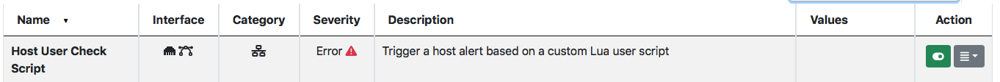

3. Проверки хоста
Проверки хоста написаны на C++ из соображений эффективности. Однако ntopng также предлагает Lua API, который можно использовать для создания проверок хоста. Все, что вам нужно сделать, это включить Сценарий проверки пользователя хоста поведенческая проверка под Настройки боковая панель меню. Готово, вам нужно создать скрипт с именем custom_host_lua_script.lua под /usr/share/ntopng/scripts/callbacks/checks/hosts/.

ntopng есть образец хост-скрипта, который вы можете найти здесь и это можно использовать в качестве ссылки.
3.1. Рабочий режим
Проверка сценария lua выполняется периодически на всех хостах (обычно каждую минуту). Через Lua API разработчики имеют доступ к хозяин объект, который можно использовать для доступа к информации о проверяемом хосте, а также для запуска оповещения хоста.
3.2. Пример сценария
Ниже вы можете найти простой custom_host_lua_script.lua сценарий.
if(host.ip() == "1.2.3.4") then
local score = 100
local message = "dummy alert message"
host.triggerAlert(score, message)
end
-- IMPORTANT: do not forget this return at the end of the script
return(0)
В приведенном выше сценарии предупреждение срабатывает на хостах, порт сервера которых равен 53.
3.3. Методы хост-объекта
- хост.ip()Чтение IP-адреса хоста (строка)
- хост.имя()Прочитайте символическое имя хоста (строка)
- хост.vlan_id()Прочитайте идентификатор хоста VLAN (номер)
- хост.is_unicast()Проверьте, имеет ли хост одноадресный IP-адрес (bool)
- хост.is_multicast()Проверьте, имеет ли хост IP-адрес многоадресной рассылки (bool)
- хост.is_broadcast()Проверьте, имеет ли хост широковещательный IP-адрес (bool)
- хост.is_blacklisted()Проверьте, находится ли хост в черном списке (bool)
- хост.bytes_sent()Прочитать (всего) отправленных хостом байтов (число)
- хост.bytes_rcvd()Прочитайте (общее количество) полученных хостом байт (число)
- хост.байты()Прочитайте (общее количество отправленных и полученных) хост-байтов (число)
- хост.l7()Чтение статистики протокола хоста nDPI (таблица)
- хост.triggerAlert(оценка, сообщение)Запускает оповещение для выбранного хоста. Параметр оценки (числовой) используется для установки оценки оповещения, а сообщение (строка) используется для установки строки оповещения, которая обычно содержит удобочитаемое сообщение, связанное с активированным оповещением.